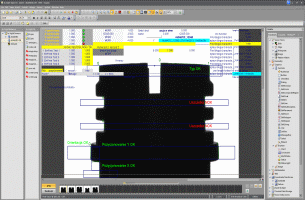

The prototype nature of our products and the high requirements of our customers represent a huge challenge.
To comprehensively implement each order from beginning to end, we have created all departments necessary in the process of designing and building machines.

- Department of Mechanical Design.
- Department of Electrical Design and Programming.
- Department of Parts Production.
- Department of Assembly.
- Department of Planning.
- Department of Purchasing, Logistics, HR, and other support units.
In the Department of Mechanical Design, our experienced team of engineers designs equipment using SolidWorks, Bricscad, AutoCAD and Autodesk Inventor software.


Most of the designed parts are manufactured by our Department of Parts Production. This allows us to track the progress of implementation on an ongoing basis – using proprietary production management program – SSP2.


Designers and developers in our Department of Electrical Design and Programming use BricsCad and EPLAN Electric P8 software to create electrical diagrams.


We program:
PLC Siemens Simatic S5 and Simatic S7 in STL, LAD, FBD, SCL and Graph


PLC Allen-Bradley MicroLogix and SLC500 in LAD


PLC Allen-Bradley CompactLogix and ControlLogix in Ladder, SFC, FBD and Structured Text


PLC Mitsubishi, GE-Fanuc / Fanuc, Omron and Schneider-Electric
HMI Panels:
Siemens Simatic OP / TP, MP and KT Multipanels
Allen-Bradley PanelView, Allen-Bradley PanelView Plus and PanelView Plus CE
Proface HMI


Servodrives:
Siemens, Allen-Bradley, Bosch-Rexroth, Mitsubishi, Omron, Yaskawa, SEW, Lenze


Vision Systems:
Cognex, Keyence, Dalsa, Omron, DVT, National Instruments, Balluff
